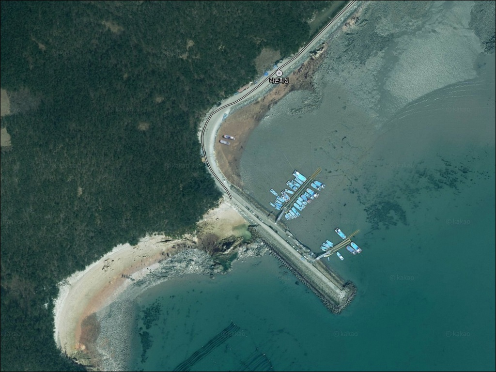
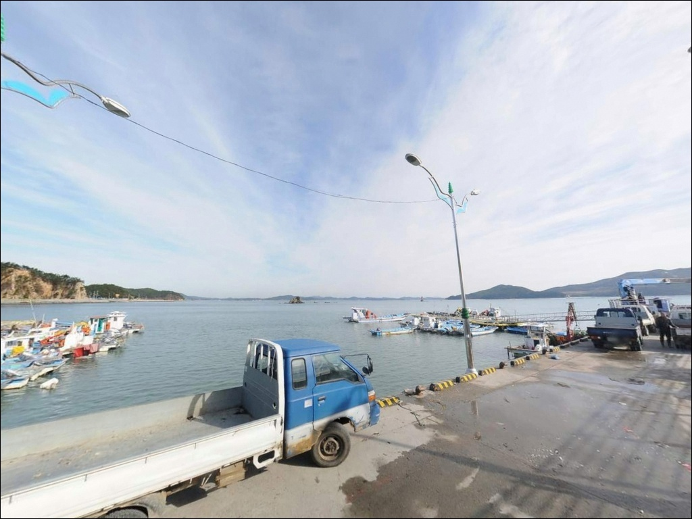
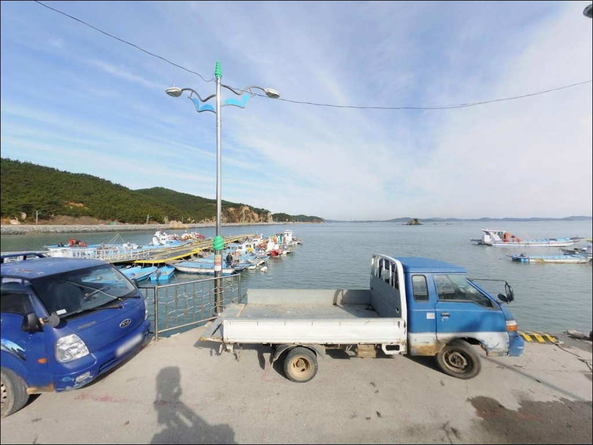
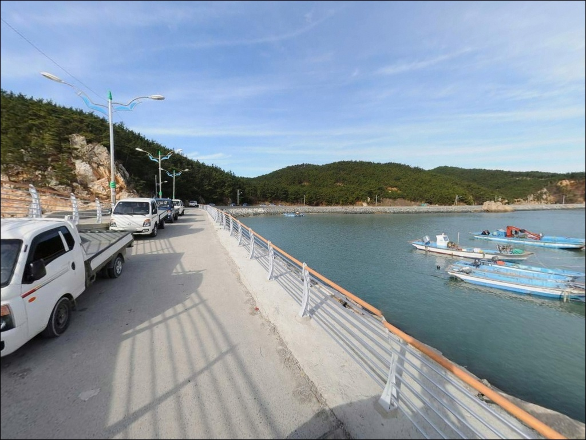
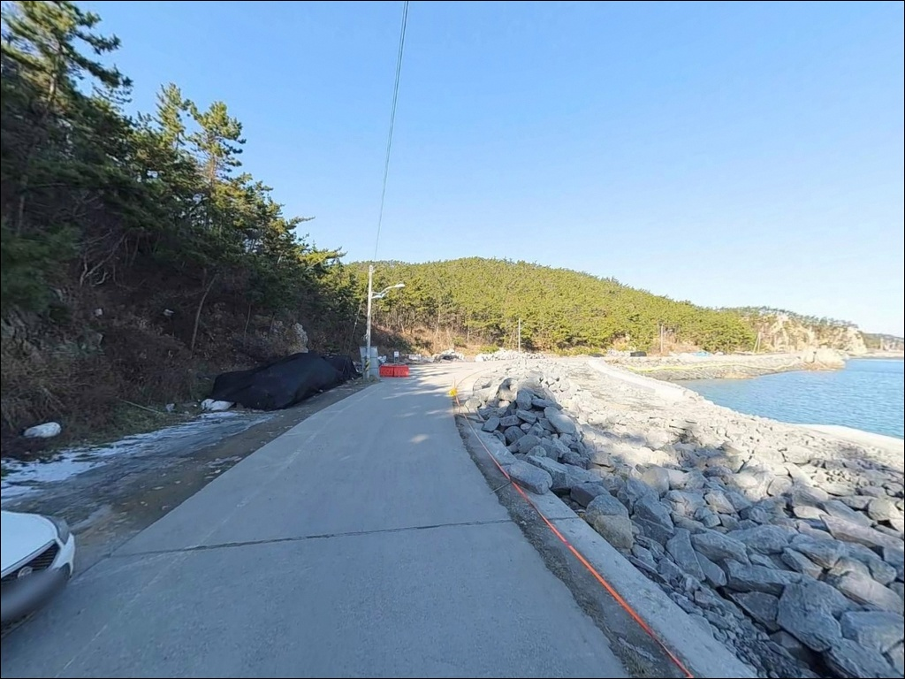
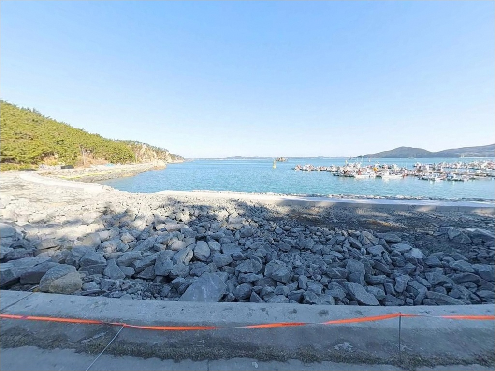
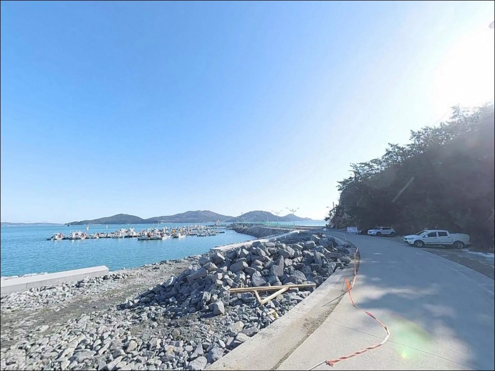
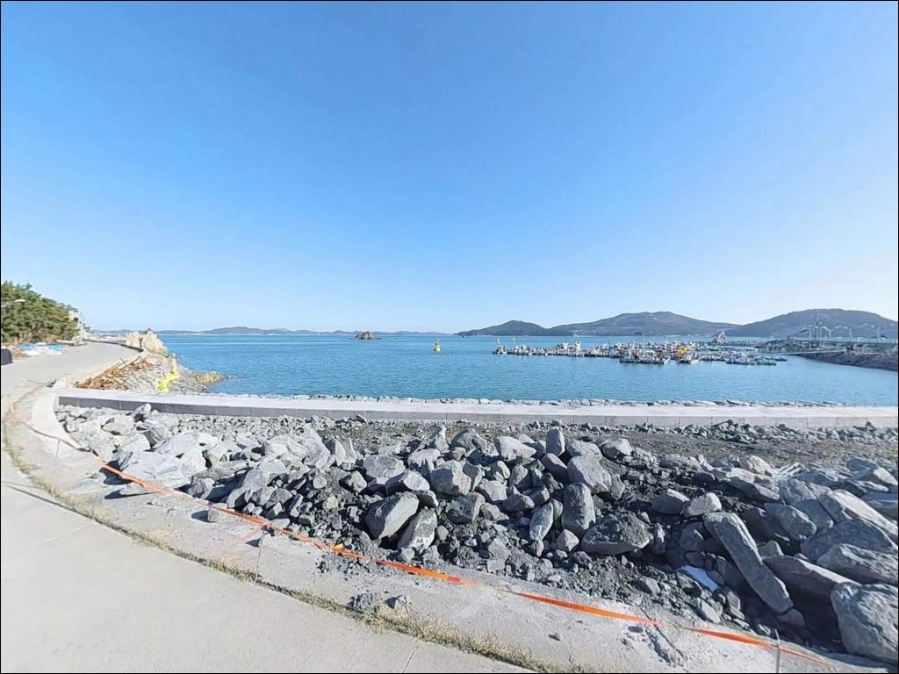
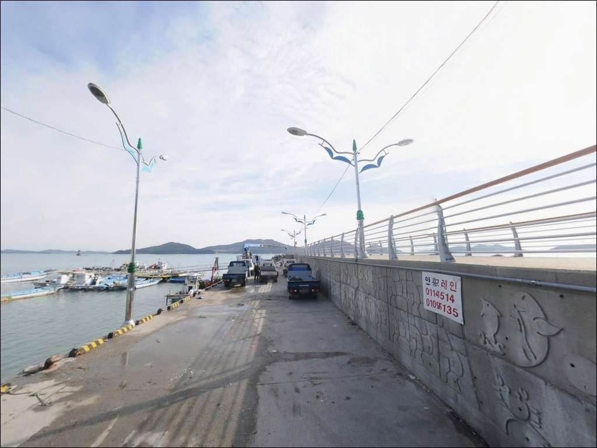

통개항 (통개방파제), 충남 태안군 차박, 낚시 여건 좋은 명소
이 페이지에는 광고(제휴 링크 포함)가 있으며, 광고 링크를 통해 구매하면 운영자가 판매 수익 또는 수수료를 받을 수 있습니다. 포인트 사진: 카카오맵 스카이뷰·로드뷰. 이 페이지의 지도·사진 이미지는 카카오맵의 실제 서비스 이미지와 다를 수 있습니다.


포인트 안내
통개항
충남 태안군 소원면 파도리 130-65
통개항은 야간 출입 통제 구역으로
지정된 포인트입니다.
시간대를 확인하지 않고 야간에 진입하면
낚시 자체가 불가능한 상황을
맞닥뜨릴 수 있습니다.
태안해안국립공원 파도길 코스
종점 권역에 해당하는 것으로 보이며,
파도리라는 지명 자체가
거센 파도에서 비롯된 곳입니다.
기상 예보 확인이 낚시 계획의 첫 번째 조건인
포인트로 이해하고 준비해야 합니다.
이 글은 통개항의 낚시 여건,
진입 환경, 차박 조건, 방문 전 주의사항에
집중합니다.
조황 단정이나 특정 어종 보장은
이 글의 범위에 포함되지 않습니다.

1. 진입 동선과 차량 접근 여건
통개항은 소원면에서 모항파도로를 따라
파도리 방향으로 진입하는 단일 루트로 이어집니다.
파도리 마을을 거쳐 들어오는 소로 구간이 포함되어 있어
폭이 좁고 서행이 필요한 구간이 있는 편입니다.
회차 공간은 항 내부에 어느 정도 확보되는 편이지만,
대형 캠핑카나 대형 차량이라면
공간 여유가 충분하지 않을 수 있습니다.
초행이라면 출발 전 위성지도로 진입로 구간을
먼저 확인해 두는 편이 좋습니다.
주차는 항 주변에 무료로 가능한 공간이 있습니다.
선착장 접안 구역과 어선 진출입 동선을
막지 않는 자리를 먼저 파악하고 주차하는 것이
기본 매너입니다.

2. 차박 환경과 야간 체류 여건
통개항은 민가와 인접한 어촌 마을 포구입니다.
낮 시간 기준으로는 바다 조망이 좋고
비교적 조용한 분위기이지만,
야간 출입 통제 구역으로 지정되어 있어
야간 체류 자체가 제한될 수 있는 포인트입니다.
가로등 수가 많지 않을 가능성이 있어
야간에는 개인 조명 장비가 필수입니다.
파도리 일대는 파도 소리가 크고
외항 방향으로 바람이 직접 들어오는 구조라,
기상이 좋지 않은 날에는
차 안에서도 체류가 불편해질 수 있습니다.
태안해안국립공원 파도길 코스 인근에
해당할 가능성이 있으므로,
국립공원 구역 내 지정 외 장소에서의
야영·취사는 원칙상 허용되지 않습니다.
현장 안내판에서 구역 포함 여부를
반드시 확인해야 합니다.


3. 주변 편의시설 및 인프라 현황
반경 3km 이내에는 파도리 마을 내
식당과 카페가 있는 것으로 소개되는 편이나,
상시 운영 여부는 방문 전 별도로
확인하는 것이 안전합니다.
파도리해수욕장은 통개항에서
매우 가까운 거리에 있으며,
여름 성수기에는 기본적인 편의 공간이
갖춰지는 곳으로 소개됩니다.
비수기에는 이용 가능 여부를
따로 확인해야 합니다.
반경 10km권에 모항항이 있습니다.
국가어항으로 지정된 모항항에는
낚시용품점과 편의시설이 갖춰져 있어,
출조 전 소품 보충이 필요하다면
모항 방면을 먼저 들러 준비하는 동선이
효율적입니다.
통개항 자체는 완전 자급 체제로
진입하는 것이 현실적인 준비 방식입니다.

4. 방문 전 반드시 확인할 사항
통개항 방문 전 가장 먼저 확인해야 할 것은
야간 출입 통제 여부입니다.
태안해양경찰서 지침에 따라
통개항 해역이 야간 출입 통제 구역으로
지정된 상태로,
현지 통제 공고 확인이 출발 전 필수 항목입니다.
서해 특성상 조수 간만 차가 크므로
물때 확인도 빠질 수 없습니다.
바다타임에서 파도리 기준 물때를 확인하고
밀물 타이밍에 맞춰 출발 시각을 조정하는 것이
원투낚시 기준 기본 전략입니다.
파도리 일대는 너울성 파도가 발생하기 쉬운 지형입니다.
기상청 예보에서 풍랑특보 여부를 확인하고,
갯바위 구간은 기상이 나쁜 날 접근을
피하는 것이 안전합니다.
전복 양식장이 인근에 운영 중이므로
루어낚시 시 밑걸림에 특히 주의가 필요합니다.

5. 지형이 만드는 낚시 환경
통개항은 방파제와 선착장이 결합된 구조입니다.
선착장 끝단은 간조 시에도
일정 수심이 유지되는 편이며,
끝단으로 갈수록 조류 소통이 원활해지는
흐름을 보이는 지형입니다.
바닥은 모래와 자갈, 잔돌이 혼합된 구조로
어류 서식에 유리한 조건을 갖추고 있습니다.
외항 방향은 서해를 직접 마주하는 구조라
파도와 바람 영향을 받는 편입니다.
파도리는 지명 자체가 거센 파도에서 유래한 곳으로,
외항 노출 구간에서는 날씨에 따라
너울성 파도가 올라올 수 있습니다.
기상이 안정된 날의 낚시 효율이 훨씬 높은 포인트입니다.
항 인근 해역에는 전복·미역·굴 양식장이
운영 중인 것으로 확인됩니다.
양식장 수중 구조물이 분포할 가능성이 있어
루어나 원투 채비를 운용할 때
밑걸림 발생 구간을 먼저 파악한 뒤
자리를 잡는 것이 채비 손실을 줄이는 방법입니다.
최신 조황은 가기 전에 꼭 검색해 보시기 바랍니다.


6. 통개항에 어울리는 낚시 스타일
이 포인트 지형에서 우선 고려할 낚시는
원투낚시입니다.
방파제 외항 방향으로 멀리 던져
모래·자갈 바닥을 탐색하는 방식이
이 포인트 구조와 잘 맞습니다.
밀물 타이밍에 청갯지렁이 미끼를 사용하는 것이
서해 방파제 원투낚시의 기본 패턴입니다.
이 지형에서 기대해볼 수 있는 어종으로는
우럭, 쥐노래미, 붕장어, 도다리 등이 있습니다.
에깅도 노려볼 만한 스타일입니다.
돌과 자갈 혼합 바닥 구조는
가을철 갑오징어와 주꾸미 서식에
유리한 조건을 갖추고 있습니다.
선착장 끝단 조류 변화 구간이
에깅 자리로 먼저 탐색해볼 곳입니다.
루어낚시는 방파제 끝단과
내항 석축 경계 구간을 중심으로 시도해볼 수 있습니다.
소프트 베이트 지그헤드 채비로
바닥층을 천천히 더듬는 방식이
우럭과 쥐노래미를 노리기에 적합합니다.
양식장 수중 구조물 인근은
밑걸림 주의 구간으로 미리 파악해 두는 것이 좋습니다.

7. 대안 포인트와 플랜 B 동선
통개항 여건이 맞지 않을 때
가장 먼저 이동할 대안은 모항항입니다.
북방파제 480m, 남방파제 370m 규모의
국가어항으로, 거의 전 구간에서
낚시 자리를 잡을 수 있습니다.
추락 방지 철제 난간이 설치되어 있어
안전 여건도 안정적인 편입니다.
모항항에서는 우럭·쥐노래미·숭어·학공치·도다리·붕장어 등
다양한 어종을 기대해볼 수 있는 지형이며,
낚시용품점과 편의시설이 갖춰져 있어
소품 보충도 현장에서 가능합니다.
통개항을 처음 방문하는 경우라면
모항항을 기준 거점으로 삼고
통개항을 병행 탐색하는 동선도 효율적입니다.
파도리해수욕장은 통개항에서 매우 가까운 거리에 있어
원투낚시를 모래해변 방식으로 전환하고 싶을 때
활용할 수 있는 예비 포인트입니다.
통개 해수욕장도 항 남쪽 소규모 해변으로,
바람 방향이 불리할 때 피해 이동하기 좋은 예비 자리입니다.

준비가 갖춰진 낚시꾼에게
통개항은 조용한 포인트입니다
조용한 서해 어촌 포구에서
원투낚시나 에깅을 즐기고 싶은 낚시인이라면
통개항의 지형 조건은 잘 맞는 구조입니다.
모래·자갈 혼합 바닥과
선착장 끝단의 조류 흐름은
여러 낚시 스타일을 함께 시도해볼 수 있는
여건을 갖추고 있습니다.
반면 야간 출입 통제 여부 확인,
기상 사전 점검, 진입로 파악 없이 찾아가면
낚시 시작 전에 발목이 잡히는 포인트입니다.
편의시설이 충분하지 않아
자급 준비 없이 들어가면
하루 일정 전체가 불편해질 수 있습니다.
물때 확인, 야간 통제 공고 점검, 자급 준비를
갖추고 간다면 인파 없이 조용히
낚시와 차박을 함께 즐길 수 있는 곳,
그게 통개항입니다.